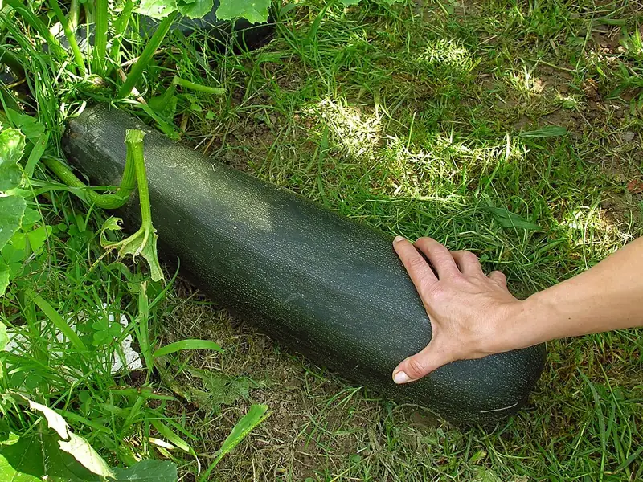

Growing summer squash - two plants is plenty
The most over-planted vegetable in the home garden. Why a zucchini buries a household, what the bush-or-vining word changes about the space it takes, why the first flowers fall off, and when a trellis makes sense for a squash at all.
See how much room squash needs at your place →
What you need
- Restraint - one or two plants feed a family; a row feeds the neighbourhood against its will
- A full metre of room per bush plant, more for a vining type - or a sturdy trellis
- A knife for harvesting at hand-length, every day or two once they start
Summer squash is the easiest serious-yield crop in this library, and that is precisely its danger. One healthy zucchini produces faster than a household eats; three produce faster than a neighbourhood does. Plant one or two, and spend the saved ground on something that does not multiply overnight.
The word on the packet, again
Squash is the crop the bush-or-vining guide was written about, and the short version bears repeating: the same species is either a bush - a big rosette holding roughly a square metre - or a vining type that runs several metres and swallows a small bed whole. Most zucchini are bush types; many heirloom summer squashes vine. In a small bed the vining type has two honest outcomes: give it a direction to run, or give it a trellis.
A trellised squash is a real option, not a novelty - the same benefits as a trellised cucumber: a fraction of the footprint, cleaner fruit, drier leaves. The planner marks vining squash better with a support, and the staking guide sizes it honestly: a fruiting squash vine is heavy, so this is a job for a cattle panel or a genuinely sturdy frame, not netting.
Planting and the first-flowers panic
Sow direct after frost into warmed soil - squash is tender, fast (six to nine weeks to first fruit), and resents transplanting. Then comes the moment that generates more worried questions than any squash disease: the first flowers fall off without fruiting. Squash opens male flowers first, often for a week or more, and only the females - tiny squash already visible behind the bloom - become fruit. Early drop is the schedule, not a failure. When flowers of both kinds are open and fruit still is not setting, it is a pollination story - insects have to carry the pollen - and the pollination guide picks it up from there.
Harvest small, harvest often
Everything a zucchini is famous for going wrong is a harvesting habit. Pick at hand-length, every day or two - the fruit at that size is the crop at its best, and a single marrow left to swell to forearm size tells the plant to slow down. In high season this is a daily walk, which is the real meaning of "easy to grow, demanding to keep up with."
Squash is a cucurbit like cucumber and melon, so it carries the same rotation load - the planner keeps the family moving off ground it recently held when you log where it grew. And if you are tempted by the oldest squash arrangement of all, the Three Sisters mound gives it the ground-cover role it has held for a few thousand years.
Sources for the technique on this page
Next in What to grow → Growing grapes - a decade-long tenant that arrives before its house
Plants in this guide: Summer Squash